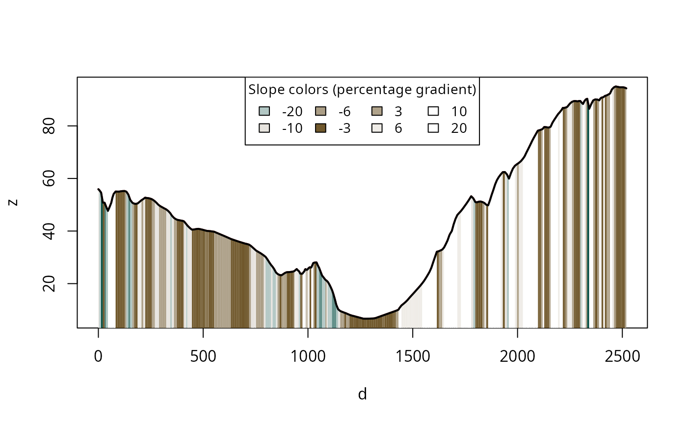
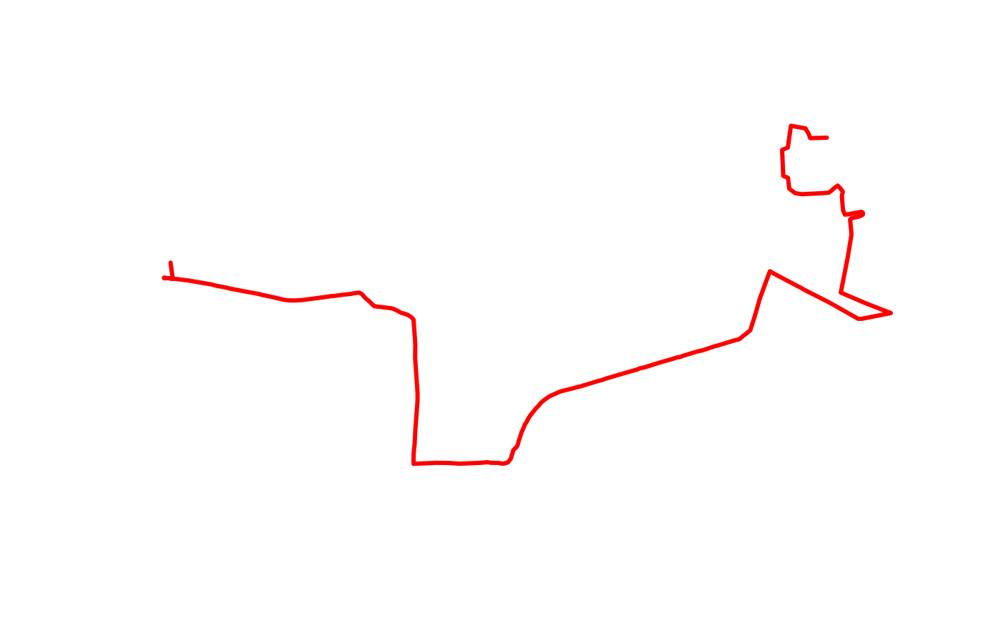

Welcome to the slopes vignette, a type of long-form
documentation/article that introduces the core functions and
functionality of the slopes package.
You can install the released version of slopes from CRAN with:
install.packages("slopes")Install the development version from GitHub with:
# install.packages("remotes")
remotes::install_github("ropensci/slopes")If you do not already have DEM data and want to make use of the
package’s ability to download them using the ceramic
package, install the package with suggested dependencies, as
follows:
# install.packages("remotes")
remotes::install_github("ropensci/slopes", dependencies = "Suggests")Furthermore, you will need to add a MapBox API key to be able to get
DEM datasets, by signing up and registering for a key at
https://account.mapbox.com/access-tokens/ and then
following these steps:
usethis::edit_r_environ()
# Then add the following line to the file that opens:
# MAPBOX_API_KEY=xxxxx # replace XXX with your api keyelevation_add() Take a linestring and add a third
dimension (z) to its coordinateselevation_get() Get elevation data from hosted maptile
services (returns a SpatRaster)elevation_extract() Extract elevations from
coordinatesslope_vector() Calculate the gradient of line segments
from distance and elevation vectorsslope_distance() Calculate the slopes associated with
consecutive distances and elevationsslope_distance_mean() Calculate the mean average slopes
associated with consecutive distances and elevationsslope_distance_weighted() Calculate the slopes
associated with consecutive distances and elevations, weighted by
distanceslope_matrix() Calculate the slope of lines based on a
DEM matrixslope_matrix_mean() Calculate the mean slope of lines
based on a DEM matrixslope_matrix_weighted() Calculate the weighted mean
slope of lines based on a DEM matrixslope_raster() Calculate the slope of lines based on a
raster DEMslope_xyz() Calculate the slope of lines based on XYZ
coordinatesplot_slope() Plot slope data for a 3d linestringsequential_dist() Calculate cumulative distances along
a linestringz_value() Extract Z coordinates from an
sfc objectz_start() Get the starting Z coordinatez_end() Get the ending Z coordinatez_mean() Calculate the mean Z coordinatez_max() Get the maximum Z coordinatez_min() Get the minimum Z coordinatez_elevation_change_start_end() Calculate the elevation
change from start to endz_direction() Determine the direction of slope
(uphill/downhill)z_cumulative_difference() Calculate the cumulative
elevation differenceThis section shows some basic examples of how to use the
slopes package.
First, load the necessary packages and data:
library(slopes)
library(sf)
#> Linking to GEOS 3.12.2, GDAL 3.8.4, PROJ 9.4.0; sf_use_s2() is TRUE
#> WARNING: different compile-time and runtime versions for GEOS found:
#> Linked against: 3.12.2-CAPI-1.18.2 compiled against: 3.12.1-CAPI-1.18.1
#> It is probably a good idea to reinstall sf (and maybe lwgeom too)
# Load example data
data(lisbon_route)
dem_lisbon = dem_lisbon()If you have a 2D linestring and a DEM, you can add elevation data to
the linestring using elevation_add():
sf_linestring_xyz_local = elevation_add(lisbon_route, dem = dem_lisbon)
head(sf::st_coordinates(sf_linestring_xyz_local))
#> X Y Z L1
#> [1,] -88202.31 -105757.6 55.91552 1
#> [2,] -88201.67 -105762.3 55.52176 1
#> [3,] -88200.54 -105770.5 54.62495 1
#> [4,] -88199.42 -105778.7 50.82914 1
#> [5,] -88198.29 -105786.9 50.76749 1
#> [6,] -88205.89 -105786.3 49.22162 1If you don’t have a local DEM, elevation_add() can
download elevation data (this requires a MapBox API key and the
ceramic package):
# Requires a MapBox API key and the ceramic package
# sf_linestring_xyz_mapbox = elevation_add(lisbon_route)
# head(sf::st_coordinates(sf_linestring_xyz_mapbox))Once you have a 3D linestring (with XYZ coordinates), you can
calculate its average slope using slope_xyz():
slope = slope_xyz(sf_linestring_xyz_local)
slope
#> 1
#> 0.07817098You can visualize the elevation profile of a 3D linestring using
plot_slope():
# ensure a palette and breaks exist
brks <- c(3, 6, 10, 20, 40, 100)
pal <- slopes_palette(length(brks) - 1)
plot_slope(sf_linestring_xyz_local, pal = pal, brks = brks)
The slopes package can also work with individual
segments of a linestring. First, let’s segment the
lisbon_route:
lisbon_route_xyz = elevation_add(lisbon_route, dem = dem_lisbon())
lisbon_route_segments_xyz = sf::st_cast(lisbon_route_xyz, "POINT") |>
sf::st_coordinates() |>
(\(m) {
n = nrow(m)
segs = lapply(seq_len(n - 1), function(i) sf::st_linestring(m[i:(i+1), 1:3]))
sf::st_sf(geometry = sf::st_sfc(segs, crs = sf::st_crs(lisbon_route_xyz)))
})()
#> Warning in st_cast.sf(lisbon_route_xyz, "POINT"): repeating attributes for all
#> sub-geometries for which they may not be constantNow calculate the slope for each segment:
lisbon_route_segments_xyz$slope = slope_xyz(lisbon_route_segments_xyz)
summary(lisbon_route_segments_xyz$slope)
#> Min. 1st Qu. Median Mean 3rd Qu. Max. NAs
#> 0.0001026 0.0239350 0.0545492 0.0770948 0.1076403 0.4570354 24You can plot these segments, for example, colored by their slope.
Here we use tmap for a more advanced plot (requires
tmap package).
# Requires tmap package
# library(tmap)
# qtm(lisbon_route_segments_xyz, lines.col = "slope", lines.lwd = 3)Alternatively, using base R graphics:
plot(st_geometry(lisbon_route_segments_xyz), col = heat.colors(length(lisbon_route_segments_xyz$slope))[rank(lisbon_route_segments_xyz$slope)], lwd = 3)
This vignette provides a basic overview. For more detailed information and advanced use cases, please refer to the other vignettes and the function documentation.